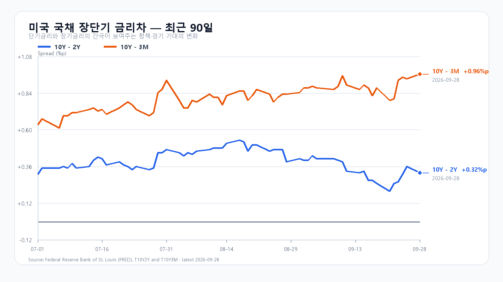
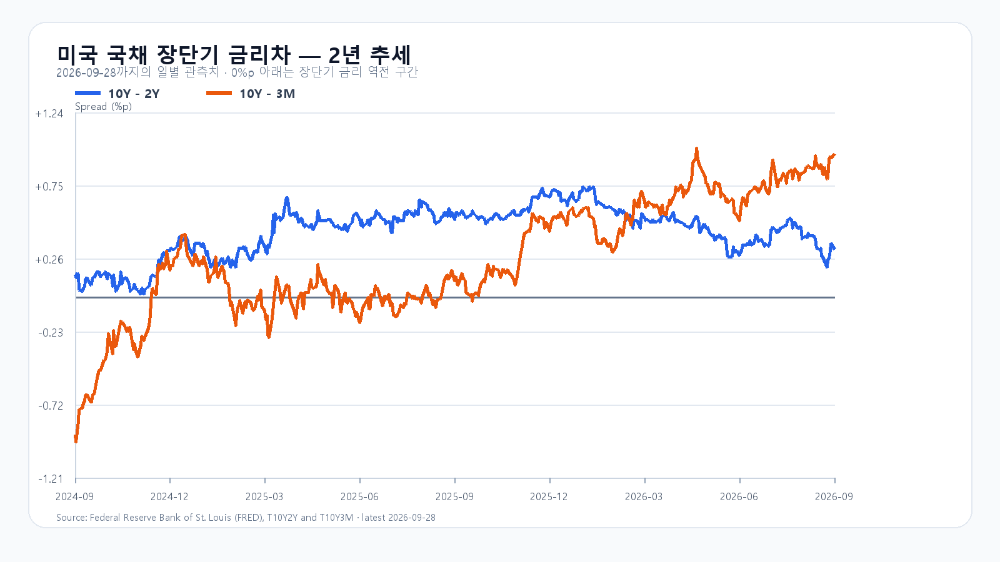

미국 반도체주의 반등은 하루를 넘기지 못했다. 9월 28일 미국 정규장에서 SOXX는 2.08%, SMH는 1.08% 내렸고 Micron은 2.62%, AMD는 3.61% 하락했다. 유가가 다시 오르고 장기금리가 높은 자리를 지키는 동안, AI 투자에 필요한 자본비용이 다시 주가의 앞자리를 차지했다.
국내 시장은 이미 9월 28일 KOSPI 6,889.74(-2.70%), KODEX 레버리지 109,370원(-6.50%)으로 크게 조정받았다. 그래서 미국 반도체 약세를 전날 하락폭만큼 다시 계산할 이유는 없다. 장전 NXT에서 삼성전자와 SK하이닉스가 약세를 이어간 만큼, KOSPI가 먼저 6,900선을 되찾는지와 외국인·프로그램 수급의 동행이 오늘 장의 방향을 가를 가능성이 크다.
메모리의 실물 흐름과 주가 흐름은 갈라져 있다. 공개 현물 기준 DDR5 16Gb는 9월 24일 57.667달러로 0.29% 올랐지만 DDR4 16Gb는 0.70% 내렸다. AI 서버용 메모리 수요가 꺾였다는 신호는 아니지만, Micron 실적과 미국 고용·물가 지표를 앞둔 주식시장은 그보다 먼저 포지션을 줄일 수 있다.
기본 시나리오는 KOSPI 6,800~6,950, 확률 45%다. 전날 급락을 소화하면서 6,900선 회복을 시도하되 금리와 유가 부담이 상단을 누르는 경우다. 6,950을 넘고 외국인 현물과 프로그램이 함께 순매수로 돌아서면 6,950 초과~7,100의 강세 범위를 본다. 반대로 6,800을 이탈하고 두 수급이 함께 순매도로 기울면 6,550~6,800 미만의 약세 범위가 열린다.
KODEX 레버리지는 106,000원을 1차 지지, 109,370원을 반등 기준, 112,000원을 저항으로 둔다. 장중 고저 예상 범위는 KOSPI 6,450~7,100이다. 대응 점수는 공격 15, 관망 40, 방어 45다.
| 종가 시나리오 | 범위·확률 | 15시 20분 확인 조건 | 전환 신호 |
|---|---|---|---|
| 기본 | 6,800~6,950 · 45% | 6,800 이상 · 6,950 이하 · 외국인 매도 급확대 없음 | 범위 이탈 |
| 강세 | 6,950 초과~7,100 · 15% | 6,950 초과 · 외국인·프로그램 동반 순매수 | 6,950 아래 재진입 |
| 약세 | 6,550~6,800 미만 · 40% | 6,800 미만 · 외국인·프로그램 동반 순매도 | 6,800 회복 |

